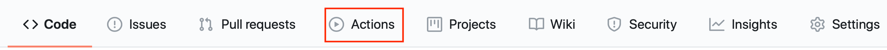

GitHub Actions¶
GitHub Actions are an automation feature build into GitHub. They allow actions to be triggered as a result of activity, such as a push or pull request, on a repository
GitHub Actions are easy to set up and are available on both the free and paid GitHub plans. Note: Actions are not yet available on all Enterprise Git sites.
You can easily tell if your git project is enabled for Actions by seeing if there is an Action section:

Full documentation is available for GitHub actions, but follow these simple steps and use this repository as a reference. The action used in this project publishes the project documentation (in the docs folder of the repo) to a GitHub pages site using the MkDocs static site generator.
- Create a .github directory in your repository
- Add an actions directory inside the .github directory
- Create an action to generate and publish the site using MkDocs (see below for instructions)
- Add a workflows directory inside the .github directory
- Create a workflow to checkout the code from git and then run the action created in step 3 to generate the site
Actions¶
An action is an individual task, which can be run as part of a workflow initiated when something happens on a GitHub repository. There is a marketplace of actions available or you can create your own private actions.
In this example a private action is created.
Private actions can exist in the git repository where they will be used. I recommend adding them within the .github directory to separate the GitHub action configuration with the primary purpose of the github repository.
See the documentation for all the options for creating actions, but this example uses a container to perform the operations of the action.
An action is defined by a configuration file, called action.yml, again the syntax of the config file is described in the documentation. The action.yml file for this project contains the following:
# action.yml
name: 'Deploy to GitHub Pages'
description: 'Publish Markdown docs as GitHub Pages static site'
runs:
using: 'docker'
image: 'Dockerfile'
Here you see a name and description, then a runs section which uses a Docker container to perform the work. The Docker container image can be specified using a Dockerfile - the path is relative to the action.yml file, so in this case in the same directory. It is also possible to specify an image from a public image repository, such as Docker Hub.
The Docker file for this project contains the following:
FROM python:alpine
RUN apk add --no-cache \
build-base \
git \
git-fast-import \
openssh
RUN pip install --no-cache-dir mkdocs
COPY entrypoint.sh /entrypoint.sh
RUN chmod +x /entrypoint.sh
ENTRYPOINT ["/entrypoint.sh"]
which simple installs the prerequisite packages to install and build the mkdocs runtime, then copies in the script which will run when the contain is run.
The entrypoint script contains the following:
#!/bin/sh
mkdocs gh-deploy --config-file "${GITHUB_WORKSPACE}/mkdocs.yml" --force
which simple runs the mkdocs command, with the gh-deploy option to deploy to github pages. Notice the use of the GITHUB_WORKSPACE environment variable, which the GitHub Actions runtime initialises at the container startup.
Workflow¶
The workflow defines when a GitHub action will run and what actions will be run. For a project the workflow files must exist in the .github/workflows directory structure at the root of the project.
The workflow file (build.yml) for this project contains the following:
name: GenerateSite
on:
push:
branches: [master]
pull_request:
branches: [master]
jobs:
generate:
name: 'Run mkdocs gh-deploy'
runs-on: ubuntu-latest
steps:
- name: Check out repository
uses: actions/checkout@v2
- name: generate site
uses: ./.github/actions/
Here you can see the workflow has a name then the on section defines when this workflow will run. Here I specified that this workflow will only run when something is pushed to the master branch or a pull request is made to the master branch. Activity on other branches will not trigger this workflow.
Info
GitHub as renamed the default branch from master to main in all new repositories
When the workflow triggers a single job is run within a Ubuntu Linux container. The job has 2 steps that are run sequentially.
The first one uses an action from the marketplace to checkout the latest code from the repository (after the push or pull request that triggered the workflow has taken place).
The second one is our private action to generate the MkDocs site and publish it to GitHub Pages. Notice the uses property points to the directory containing the action.yml file, which is relative to the project root directory.
You can use the Actions section of the GitHub web UI to check on the progress of actions and see the status of all Action triggered and provides access to the logs generated by all actions that have previously run.
You can add a badge to your project README.md, to give a visual indication if the latest Action completed successfully. The badge for this site is created using the following:
GitHub Pages : 
User Limits¶
GitHub Actions are available on most GitHub accounts, though there are usage limitations, but for documentation formatting the limitations should not pose an issue.